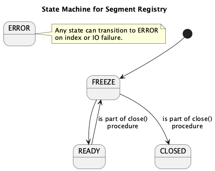

Segment Registry
This document describes the segment registry responsibilities and supported operations.
Scope
- The registry owns:
- safe access to segment resources (load/create/delete)
- in-memory segment cache (LRU)
- registry-level state gate (
READY,CLOSED,ERROR,FREEZE) - segment id allocation for new segments via
SegmentIdAllocator
- The registry does not own protection of "segment in use" vs "segment close/delete" races. This responsibility belongs to the Segment package. Segment implementations must remain safe when one thread uses a segment while another thread closes it.
- The registry does not own split execution, scheduling, or in-flight tracking. Those belong to the segment index layer.
- The registry is about safe access to segment resources; it should not manage operations on those resources (flush/compact/split remain outside).
- Segment load/open failures are status-driven:
getSegment()andcreateSegment()returnERRORwhen loading/opening fails (including missing segment files), with no dedicated registry-status exception type.
Registry State Machine
Registry starts in FREEZE during bootstrap and transitions to READY
when startup completes.

Transitions
| Original State | New State | When |
|---|---|---|
READY |
FREEZE |
is part of close() procedure |
FREEZE |
READY |
happens after starting procedure |
FREEZE |
CLOSED |
index closing while frozen (close()) |
| any | ERROR |
unrecoverable registry failure (fail()) |
Rules
- Request operations (
getSegment(),allocateSegmentId(),createSegment(),deleteSegment()) are state-gated:READY-> normal flow,FREEZE->BUSY,CLOSED->CLOSED,ERROR->ERROR. - In
READY,getSegment()anddeleteSegment()can still returnBUSYon cache entry state conflict. close()is idempotent and movesREADYtoFREEZEand than toCLOSED.ERRORis terminal for the state machine;close()does not transitionERRORtoCLOSED.
Registry Operations
| Operation | Description |
|---|---|
getSegment(id) |
Load or return cached segment by id (SegmentRegistryResult<Segment>). |
allocateSegmentId() |
Allocate a new segment id for split or growth (SegmentRegistryResult<SegmentId>). |
createSegment() |
Allocate id and create a new segment (SegmentRegistryResult<Segment>). |
deleteSegment(id) |
Close and delete a segment, then remove from cache (SegmentRegistryResult<Void>). |
close() |
Close cached segments (SegmentRegistryResult<Void>). |
All registry operations return SegmentRegistryResult<T> (status + optional value).
Registry BUSY/CLOSED/ERROR outcomes are propagated by SegmentRegistryResultStatus.
The primary safety model is the registry state
gate + per-key cache entry state machine, not caller-side pinning.
Response Codes
SegmentRegistryResultStatus is carried by SegmentRegistryResult<T> with semantics:
| Code | Description |
|---|---|
OK |
Segment returned or operation accepted. |
BUSY |
Temporary refusal (cache entry state conflict, UNLOADING, or registry is FREEZE). |
CLOSED |
Registry closed; no further operations. |
ERROR |
Unrecoverable registry failure. |
Registry cache Entry
This section describes the target cache-entry model planned for implementation.
Entry operations
| Operation | Entry state precondition | Outcome | Used by |
|---|---|---|---|
tryStartLoad() |
MISSING |
Attempts to start load for the key by transitioning to LOADING for the winning caller. Returns not-started when another entry already exists. |
SegmentRegistryCache.get() miss path |
waitWhileLoading(currentAccessCx) |
Any | Waits while LOADING Returns value in READY, any exceptions in propagated. up |
SegmentRegistryCache.get() |
finishLoad(value) |
LOADING |
Stores value, transitions to READY, signals waiters. |
cache load winner |
fail(exception) |
LOADING |
Stores failure, marks entry failed/unloading path, signals waiters; map entry is removed by cache loader error path. | cache loader error path |
tryStartUnload() |
READY with value |
Attempts atomic transition to UNLOADING. Returns true when unload was started, false otherwise. |
eviction and invalidate() |
finishUnload() |
UNLOADING |
Clears value and signals waiters; entry is then treated as missing by readers. | eviction and invalidate() finalization |
getEvictionOrder() |
Any | Returns LRU order only for unloadable READY entry; otherwise returns sentinel (Long.MAX_VALUE). |
LRU candidate selection |
waitWhileLoading(currentAccessCx) blocks only while the entry is in LOADING.
It does not wait for UNLOADING; that case must be handled by higher-level
caller logic, because an unloaded entry is no longer valid.
Per-key Entry state machine
Each cache key owns one Entry object with an independent lock/condition.
Only threads touching the same key can block each other.
States
| State | Description |
|---|---|
LOADING |
Entry was atomically installed with putIfAbsent(key, Entry{LOADING}); winner thread loads value. |
READY |
Value is available; get(key) returns the value immediately and updates recency. |
UNLOADING |
Value is being closed/unloaded and entry is no longer usable for normal reads. |
MISSING is a virtual state: it means no entry was found in cache for the key yet, but an entry can still be instantiated by the loading path.
Transitions
| From | To | Trigger |
|---|---|---|
MISSING |
LOADING |
Winning caller starts load (tryStartLoad()). |
LOADING |
READY |
Loader completes successfully and signals waiters. |
LOADING |
MISSING |
Loader fails; entry is removed and waiters are signaled with failure. |
READY |
UNLOADING |
Eviction/delete starts unload (tryStartUnload()). |
UNLOADING |
MISSING |
Unloader completes and entry is removed from cache. |
Guarantees
- At most one loader runs per key.
- Wait/notify is per key (
Entry), not global. - Keys with different
Entryinstances progress independently. - Unload is started by direct per-entry transition (
READY -> UNLOADING), not by reference pin counting.
Thread model
1. Registry get(id) with cached

2. Registry get(id) with cached entry in LOADING state

When the registry entry exists in cache but is still LOADING, the cache waits until loading finishes before returning it. When the entry is UNLOADING, the registry treats it as temporarily unavailable and returns BUSY. The flow is shown below:
3. Registry get(id) cache miss with putIfAbsent(LOADING)

Please note that segment is loaded in callers thread.
4. Cache method removeLastRecentUsedSegment()

The diagram shows only the case where segment.close() succeeds. If segment.close() fails with exeception than the entry remains in UNLOADING. Which is fine.
deleteSegment(id) flow
- Try to transition the cached entry to
UNLOADING; returnBUSYwhen the entry is not unloadable. - Close the segment with retry/backoff until it is
CLOSEDor returnsOK. - Delete the segment directory and files on disk.
- Remove the unloaded entry from cache memory.
When the segment is not cached, deletion is best‑effort and only touches disk.